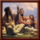

注意！由于政府机制经历了多次大改，本页面的有些信息可能与游戏中不符，请以游戏中实际情况为准。
| 马斯科吉联盟的理念 |
此信息可能已落后版本，最后更新于1.35 ----注释
用于主流文化为 |
| +1 可接受文化上限 +10% 补员速度 |
| +1 年度威望
|
|
|
原住民议会（英文：Native Council）是一种分布于墨西哥以北的北美洲、安第斯山脉以东的南美洲以及澳大利亚的广大地区的特殊政府类型，其名义上属于 部落政府的一类（即尚未完全发展成威斯特伐利亚体系所定义的主权国家的社会），但实际上拥有独立的机制与政府改革体系（政府类型代码中native是与tribal并列存在的，创建自定义国家时也可发现政府形式组“原住民”与“部落制”并列），因此本文倾向于将其视作“第五类政府类型”来介绍。游戏历史剧本中的原住民国家包括
部落政府的一类（即尚未完全发展成威斯特伐利亚体系所定义的主权国家的社会），但实际上拥有独立的机制与政府改革体系（政府类型代码中native是与tribal并列存在的，创建自定义国家时也可发现政府形式组“原住民”与“部落制”并列），因此本文倾向于将其视作“第五类政府类型”来介绍。游戏历史剧本中的原住民国家包括 北美科技组，
北美科技组， 南美科技组与
南美科技组与 澳洲原住民科技组的绝大多数国家，随机新世界也会存在此类国家。
澳洲原住民科技组的绝大多数国家，随机新世界也会存在此类国家。
这种政府类型没有  正统值、
正统值、 共和传统或其他任何种类的政府强度值。原住民政体没有继承人系统：当前君主死亡时会生成一个三围随机的君主。
共和传统或其他任何种类的政府强度值。原住民政体没有继承人系统：当前君主死亡时会生成一个三围随机的君主。
1.31版本更新前，位于美洲或随机新世界的非中南美洲信仰国家使用原住民议会政体。拥有此类政体的国家不能进行政府改革，但如果启用了DLC  征服天堂 或
征服天堂 或  黄金国，则可以通过原住民界面使用旧版迁徙机制，即迁徙到一块新的无主之地上，并获得三种点数各50，冷却时间为5年。此外还可通过原住民界面启用原住民理念和组建 部落联盟等。使用原住民议会政体的国家一般使用通用的土著的理念。
黄金国，则可以通过原住民界面使用旧版迁徙机制，即迁徙到一块新的无主之地上，并获得三种点数各50，冷却时间为5年。此外还可通过原住民界面启用原住民理念和组建 部落联盟等。使用原住民议会政体的国家一般使用通用的土著的理念。
- 注：西伯利亚小国拥有的西伯利亚原住民议会属于部落制政府类型，但也可使用旧版迁徙机制，由于其无法打开原住民界面，只能通过冷却时间结束后弹出的可以迁徙通知进入迁徙界面。
1.31版本更新后，原住民政体重做且获得了大量新特性。原住民政体现在可以进行政府改革，且接纳封建主义思潮后可以像部落制国家一样改革成为共和制、神权制、君主制或草原游牧部落。DLC  征服天堂 或
征服天堂 或  黄金国功能迁徙机制重做且与部落领地机制相关联，原住民理念机制被联盟革新所取代，此外还增加了部落发展度机制用以模拟部落的游牧行为与资源集中。现在所有原住民国家现在会根据自身所处的地理位置获得对应的国家理念，而不再使用通用的土著理念。原住民政体现在新增了四种基础一级政府改革（酋邦、联盟、氏族议会、世袭统治），原始的原住民部族政体可能不会在游戏中正常出现，自定义国家可以使用该种政府改革，但在游戏开始后可以免费切换为前述四种一级政府改革之一。
黄金国功能迁徙机制重做且与部落领地机制相关联，原住民理念机制被联盟革新所取代，此外还增加了部落发展度机制用以模拟部落的游牧行为与资源集中。现在所有原住民国家现在会根据自身所处的地理位置获得对应的国家理念，而不再使用通用的土著理念。原住民政体现在新增了四种基础一级政府改革（酋邦、联盟、氏族议会、世袭统治），原始的原住民部族政体可能不会在游戏中正常出现，自定义国家可以使用该种政府改革，但在游戏开始后可以免费切换为前述四种一级政府改革之一。
- 注：原住民国家现在使用新版迁徙机制，但旧版迁徙机制仍然存在，且可被西伯利亚原住民议会、波利尼西亚部落等部落制国家使用。
原住民界面
|
|
只适用于DLC征服天堂激活时。 |
原住民界面的入口是位于屏幕右下角的一个圆形小图标（图腾脸图案），只有未改革政府的原住民国家才能进入此界面。
原住民界面由三个部分组成：左半部显示了可用的联盟革新进度；若当前国家加入了一个 部落联盟，右上部会显示该部落联盟的盟主，下部为所有成员；右下角显示了这个国家的部落发展度，表明在省份的发展度基础上增加了首都的发展度。
部落领地
原住民国家通常拥有他们宣称拥有但并非永久居住的传统迁徙土地，在游戏中表现为部落领地。部落领地省份没有完全定居，也没有直接向其所有者提供收入或人力。在政治地图上，他们看起来未被上色（像未殖民地），但部落的名字会覆盖在其上，且省份边界会被与国家颜色相同的线条包围住。殖民国家可以无视原住民国家的部落领地宣称，直接在其上殖民，而无需向部落宣战（但省份边界的线条仍然存在，除非该原住民国家被彻底消灭）。
迁徙部落（区别于定居部落）可以增加他们目前占据的土地（只要不是任何其他国家的部落领地）作为新的部落领地（在省份界面操作，类似于添加核心），花费为[  100行政点数+
100行政点数+  10行政点数/每块拥有的部落领地]。定居部落（拥有政府改革定居）可以在现有定居省份相邻的无主之地添加部落领地（在未殖民省份界面操作，类似于迁徙部落的迁徙活动），但需要多付出200%的点数。部落领地可能会像其他省份一样在战争和谈中被割让，但成本较低。如果一个非原住民国家征服了部落领地，则其会自动成为常规省份。
10行政点数/每块拥有的部落领地]。定居部落（拥有政府改革定居）可以在现有定居省份相邻的无主之地添加部落领地（在未殖民省份界面操作，类似于迁徙部落的迁徙活动），但需要多付出200%的点数。部落领地可能会像其他省份一样在战争和谈中被割让，但成本较低。如果一个非原住民国家征服了部落领地，则其会自动成为常规省份。
尽管不会直接定居地一样提供资源，但部落领地仍有几个好处：
- 部落对任何与他们部落接壤或居住在他们部落领地上的国家都会有宣战理由。
- 部落为迁徙到其部落领地的点数花费比迁徙到非部落领地更低。
- 定居部落可以利用部落发展度永久定居到部落领地上，使其成为一个常规省份。
- 通过政府改革脱离原始状态的部落将立即定居所有部落领地。
如果一个部落失去了原住民政府，但仍保持原始状态（例如，由于皈依中美洲宗教），则所有部落领地都将失去。
部落发展度
部落发展度是原住民部落在标准省份发展度之外所拥有的一种特殊发展度形式。部落发展度被添加到首都省份度的现有发展度中，与常规发展度一样，增加了该省份的税收、生产和人力。将鼠标悬停在部落首都省份界面中列出的各项发展度上，将会列出部落发展度在总数中所占的大小。然而，部落发展度与部落本身有关，而不是与省份有关，如果原住民部落迁徙，部落发展度会转移到新首都。
拥有政府改革定居的原住民国家可以将其所有部落发展集中到一个省份（部落领地或完全拥有），永久性地将其加入该省的基础发展度。无论部落发展度的规模有多大，这都需要花费 50行政点数、
50行政点数、 50外交点数和
50外交点数和 50军事点数。对一个部落领地省份这样做会让它变成一个完全拥有的省份。
50军事点数。对一个部落领地省份这样做会让它变成一个完全拥有的省份。
当迁徙部落居住在荒废度低于100%的土地上时，每个类别每月获得0.02部落发展度。如果迁徙到另一个部落国家的部落领地上，每个类别则每月获得0.1部落发展度。
迁徙部落和定居部落可以通过省份原住民建筑 灌溉建筑改善获得每月0.01部落发展度增长（但迁徙部落可能只有一个灌溉，因为他们只能控制一个省份）。它们还可以通过联盟革新集中贮藏粮仓获得每月0.02部落发展度增长。
如果获得的部落发展度高于1，则将其除以当前部落发展度后再进行加和。此外，超过行政容量上限的部落不会获得任何部落发展度。
如果一个原住民部落被征服，所有的部落发展度都将失去。
迁徙
拥有原住民政府类型且没有实施政府改革定居的单一省份原住民部落可以整体迁徙到直接相邻的无主之地。目标省份必须为非荒地的未殖民省份，且与原国家省份陆路相邻或隔海峡相邻。这样做需要 50军事点数，并产生以下影响：
50军事点数，并产生以下影响：
- 国家移动到选定的省份，并占领该省份，而先前的省份变为未殖民状态。
- 选定的省份将根据原住民人口获得基础税收和人力，就好像它被殖民并成为了一座城市一样。
- 先前的省份保留了原来的原住民人口。
- 先前的省份的所有建筑都将立即移至新的省份。
- 在先前的省份的任何国家单位都会立即移至新的省份。
- 如果该省份不是部落领地的一部分，则可以花费[100
 行政点数+10行政点数/每块拥有的部落领地]将其添加为部落领地。
行政点数+10行政点数/每块拥有的部落领地]将其添加为部落领地。 - 如果该省份是另一个国家部落领地的一部分，该部落领地的所有者将获得针对入侵部落的“强制移民”宣战理由。
迁徙部落由于放牧的影响会给首都省份产生每月 0.2荒废度，长此以往会对生产生活造成严重影响，迫使其进行迁徙。同时，迁徙到无主之地上给予其添加新的部落领地的机会。
0.2荒废度，长此以往会对生产生活造成严重影响，迫使其进行迁徙。同时，迁徙到无主之地上给予其添加新的部落领地的机会。
每一负稳定度都将提供−10%的迁徙花费，在-3  稳定度下最多可降低−30%。获得一个额外的省份将使原住民国家失去迁徙能力，但如果该国家被缩减为一个省份，它又可以重新获得迁徙能力。战争期间不能进行迁徙。
稳定度下最多可降低−30%。获得一个额外的省份将使原住民国家失去迁徙能力，但如果该国家被缩减为一个省份，它又可以重新获得迁徙能力。战争期间不能进行迁徙。
如果迁徙到了另一个部落国家的部落领地上，则5年之内不能再继续迁徙到其他部落国家的部落领地，本国拥有的部落领地不受此影响。
1.31版本及之后， 西伯利亚原住民会议等部落制国家仍可使用旧版迁徙机制，即迁徙到新省份但获得而不是花费点数，且不使用部落领地机制。
西伯利亚原住民会议等部落制国家仍可使用旧版迁徙机制，即迁徙到新省份但获得而不是花费点数，且不使用部落领地机制。
部落联盟
- 参见：原住民部落联盟事件
 包围网；如果一名成员遭到攻击，联盟内的所有成员都将加入该成员的防御战争。部落联盟不占用
包围网；如果一名成员遭到攻击，联盟内的所有成员都将加入该成员的防御战争。部落联盟不占用 外交关系数量。最终，通过联盟革新，部落联盟可以建立联盟宪法，成为联盟首领控制下的单一国家。
外交关系数量。最终，通过联盟革新，部落联盟可以建立联盟宪法，成为联盟首领控制下的单一国家。
以下为1444开局历史剧本存在的部落联盟：
| 名称 | 联盟首领 | 成员国 |
|---|---|---|
| Illinois Confedracy 伊利诺伊联盟 |
||
| Huron Confedracy 休伦联盟 |
||
| Iroquois Confedracy 易洛魁联盟 |
||
| Three Fires Confedracy 三圣火联盟 |
||
| Great Sioux Nations 大苏族 |
原住民国家可以使用
当联盟凝聚力达到0时，联盟中最强的国家被选为新首领，联盟凝聚力重置为50。
联盟首领还将获得下列增益：[1]
| +1 | 外交声誉 | |
| +10% | 陸軍士氣 |
联盟革新
- 关于1.31版本以前的原住民理念机制，请见本页面的早期版本。
当联盟凝聚力达到100时，联盟首领可以颁布
| 名称 | 效果 |
|---|---|
|
只有选择其他7项联盟革新后才可选择
其他联盟成员的部落发展度和联盟革新带来的影响将消失 | |
| 允许发动联盟进攻战争（联盟成员将被召唤进进攻战争） | |
| +0.10 月度联盟人情增长 | |

集中贮藏粮仓 Joint Grain Depots |
|
| −20% 定居花费 | |
通过联盟革新联盟宪法整合部落联盟会转变TAG，拥有特殊主流文化的国家会使用预设的联盟国家TAG，而其他的部落联盟国家使用F+数字格式的动态国家代码。后者在成立新国家时允许设计国家名称和旗帜等，且可以使用通用的部落联盟理念；满足特定主流文化条件的国家可以使用特有的通用部落联盟理念。
整合部落联盟后的新国家政体仍为原住民，这意味着新的国家可以继续与其他部落组成联盟并再次整合等等。
注意！1.34版本更新后，已经通过全部联盟革新的原住民国家无法再组建或加入新的部落联盟！
联盟凝聚力
每月联盟凝聚力会发生如下变化：
- 每个力量低于联盟首领的成员，如果他们在首领的同一文化组中，则每月+0.1联盟凝聚力；如果不属于同一文化组，则每月+0.05联盟凝聚力。
- 每个力量高于联盟首领的成员，如果他们在首领的同一文化组中，则每月-0.2联盟凝聚力；如果不属于同一文化组，则每月-0.4联盟凝聚力。
- 如果每个联盟成员毗邻殖民国家或其他已整合的部落联盟国家，则每月+0.5联盟凝聚力。
- 每通过一次联盟革新都会使每月-0.05联盟凝聚力。
如果联盟中至少三个成员国与联盟首领处于同一文化组中，则上述改变量都会获得100%的加成修正，这将适用于正面或负面影响。
加入与离开
联盟外国家加入联盟的可能性，取决于它们对所有联盟成员的意见、它们感受到的威胁程度、联盟的外交声誉、联盟首领和受邀国家是否在同一文化组中（如果不同则观点为-100）、联盟军队的总规模、与联盟成员的平均距离，以及希望留在当前联盟的意愿（如果他们已经是一个联盟的成员）。
属于某个联盟的国家可以随时离开，该联盟的首领也可以获得对联盟成员
一个原住民国家加入一个部落联盟后，5年内不能再加入其他部落联盟。
注：部落联盟与 军事同盟是分开的；一个部落联盟中的国家也有可能成为盟友，但也有可能在它所在的联盟中没有盟友，而在联盟之外有多个盟友。同样，一个联盟的不同成员也可能参加不同的军事同盟。如果一个联盟成员向同一联盟的另一个成员宣战，其他联盟成员将不会自动卷入战争。
军事同盟是分开的；一个部落联盟中的国家也有可能成为盟友，但也有可能在它所在的联盟中没有盟友，而在联盟之外有多个盟友。同样，一个联盟的不同成员也可能参加不同的军事同盟。如果一个联盟成员向同一联盟的另一个成员宣战，其他联盟成员将不会自动卷入战争。
改革政府体制
根据DLC 征服天堂和
征服天堂和 黄金国的启用情况，会产生不同的效果。
黄金国的启用情况，会产生不同的效果。
原住民政体提供一套独特的政府改革体系。然而，在改革政府之前，只有当部落定居（已实施定居改革或拥有多个省份）时，才被允许发展省份，原始国家会获得+50%的提升成本花费。
原住民国家现在可以通过政府改革菜单改革政府。由于是原住民国家，改革进度默认为每月+0.5，这可以通过建造原住民建筑 长屋和 仪式火坑来改善（参见原住民建筑部分）。许多可用的改革都是这种政府形式所独有的，与迁徙、定居地、部落发展度、部落联盟和部落领地机制有关。
长屋和 仪式火坑来改善（参见原住民建筑部分）。许多可用的改革都是这种政府形式所独有的，与迁徙、定居地、部落发展度、部落联盟和部落领地机制有关。
对于4级政府改革与外国人贸易，如果部落与可供学习改革的国家（一个已经改革其政府的国家）接壤，则可以直接进行政府改革。这项改革一旦实施，将会把政府形式转变为目标国家的形式，并自动免费接纳目标国家已经接纳的所有思潮。
否则，这些原住民部落可以在5级政府改革通过成为共和制、神权制、君主制或草原游牧部落（仅限迁徙部落）。
注意：虽然原住民政府形式并不妨碍在未改革政府的情况下接受思潮，但提升省份发展度不会让思潮出现，因此原住民国家必须等待思潮来到新世界或改革他们的政府。
- 当DLC
 征服天堂 或
征服天堂 或  黄金国未激活：
黄金国未激活：
- 改革政府决议需要 1
 稳定度并拥有一个核心省份临近已接纳
稳定度并拥有一个核心省份临近已接纳  封建制度思潮的其他国家的核心省份。
封建制度思潮的其他国家的核心省份。
- 移除禁止接纳思潮的原住民状态。
- 改革政府决议需要 1
- 当DLC 征服天堂 或 黄金国已激活：
注：若改革前建造了大量增加税收的原住民建筑，改革后收入将大幅下降。
原住民建筑
原住民国家可以使用一套独特的建筑，以代表随着时间的推移部落不断壮大的进步。原住民建筑的行为与普通建筑类似，建在一个省份的建筑槽中，但建筑界面有所不同。存在两种类型的原住民建筑：常规建筑和唯一建筑。常规的本地建筑可以在建筑槽允许的情况下多次建造，并将其效果应用于所在省份。独特的原住民建筑只能在每个国家建造一次，但会对整个国家产生影响。
如果他们所在的省份被非部落国家拥有，无论是被敌人征服还是所有者改革政府，所有原住民建筑都将被拆除。然而，迁徙到一个新的省份不会移除所有现有的原住民建筑，而是会将这些建筑带到新的省份。定居部落（或拥有多个领地的原住民部落国家）有时会再次迁徙，拥有的省份会成为部落领地。如果发生这种情况，新首都的建筑将得到维护，而其他建筑将失去。改革政府将移除所有原住民建筑，以及建造它们的能力，然而作为交换，该国将获得建造和使用普通建筑的能力。
所有的原住民政体建筑的基础建设时间为  12个月，在完成改革政府体制后将失去所有的原住民建筑。
12个月，在完成改革政府体制后将失去所有的原住民建筑。
原住民常规建筑
除灌溉与护栏需要花费 200 金币外，其余原住民常规建筑花费均为 100
金币外，其余原住民常规建筑花费均为 100 金币。
金币。
| 建筑 | 效果 |
|---|---|
三姐妹田 Three-Sisters Field |
|
土方 Earthwork |
|
大步道 Great Trail |
|
灌溉 Irrigation |
|
长屋 Longhouse |
|
仓库 Storehouse |
|
护栏 Palisade |
|
原住民唯一建筑
所有原住民唯一建筑花费均为 200 金币，且每个国家的每一种唯一建筑仅能建造一次。
金币，且每个国家的每一种唯一建筑仅能建造一次。
| 建筑 | 效果 |
|---|---|
仪式火坑 Ceremonial Fire Pit |
|
加固房屋 Fortified House |
|
汗屋 Sweat Lodge |
宣战理由
原住民国家不允许伪造宣称，但可以通过事件与任务获得宣称。（由于提升  稳定的花费并不高，没有宣战理由的开战对于原住民国家来说也是日常）。
稳定的花费并不高，没有宣战理由的开战对于原住民国家来说也是日常）。
羞辱
|
|
只适用于DLC征服天堂激活时。 |
原住民国家会获得相邻（包括部落领地）原住民国家的特殊宣战理由“羞辱”来进攻该国，不同于“羞辱宿敌”，这一宣战理由不需要宿敌该国）。“羞辱”这一宣战理由在得到100% 战争分数时合约“展示力量”可以使败者失去 20 威望，胜者获得三项君主点数各100。这一宣战理由不能吞并国家但附庸国家还是可以的。
威望，胜者获得三项君主点数各100。这一宣战理由不能吞并国家但附庸国家还是可以的。
部落边界争端
|
|
只适用于DLC征服天堂激活时。 |
原住民国家会获得相邻（包括部落领地）原住民国家的特殊宣战理由“部落边界争端”来进攻该国，该宣战理由可以割让省份（但无法割让首都），强制迁徙或索要赔款。
把殖民者赶下海
|
|
只适用于DLC征服天堂激活时。 |
原住民国家会获得相邻（包括部落领地）殖民国家的特殊宣战理由“把殖民者赶下海”来进攻该国，该宣战理由可以割让省份（但无法完全吞并）或要求放弃殖民地。
注：由于殖民领刚成立时缺乏军队，很容易被原住民国家进攻，且宗主国不能被动干涉，这导致1.31版本更新后原住民国家日常做大，甚至整合后的部落联盟国家可以进入列强榜。
改革等级
| 第一级: 部族团体 |
|---|
| 第二级: 史诗传统 |
| 第三级: 农业革命 |
| 第四级: 法律基石 |
| 第五级: 民族认同 |


部族团体
| 类型 | 效果 | 描述与备注 |
|---|---|---|
|
一个或多个部落的首领组成的世袭式议会。成员们处理政务时必须经过长时间的讨论才能得出结果，然后由名义上的酋长公开发布正式命令。
| |
|
我们必须接纳本族群的传统。酋邦的体系能够让各位长老教授他们珍贵的人生经验。
| |
|
团结使我们更强大。通过组建一个部落联盟，我们从盟友那获得的将不仅是外交上的支持，更是血缘上的。
| |
|
在群众之中提升信任是非常重要的。通过在那些愿意为部族利益牺牲一切的人中选举产生宗教议会，我们可以确保权力不会被集中到一个单一的人手中。
| |
|
那些先驱们知道我们所追寻的是什么。他们早已历经战争与和平、繁荣与荒芜。我们的统治者应当遵循他们明智的指引和神圣的血统。
|
史诗传统
| 类型 | 效果 | 描述与备注 |
|---|---|---|
|
进入荒野，我们必须为了生命奋力拼搏。大自然母亲蕴涵的危险和她给予的慷慨相当，我们必须保护我们自己对抗野兽和想要夺走我们土地的敌人。
| |
|

我们就是故事的集合。以史为镜，可以知兴替。
| |
|
这是我们的故乡。创世之初，陆地显现时，我们在这里；世界燃烧，濒临毁灭时，我们依旧在这里。
|
农业革命
| 类型 | 效果 | 描述与备注 |
|---|---|---|
|
安全感是生活最重要的事情，聚焦于军事才能确保我们部落的幸福。
| |
有时，为到来的风暴建造庇护所比追寻它更为重要。我们是时候开始定居下来，建立起更多永居的村庄了。
| ||
|
世界在一年中不断变化，我们也必须如此。如能随着季候迁徙，我们便将寻获繁荣。
|
法律基石
| 类型 | 效果 | 描述与备注 |
|---|---|---|
|
没有什么能凌驾于法律之上。它使世界变得更加公平，使我们部族的每个人都生而平等。
| |
|
参与我们人民共同的政府是个重要且无害的任务，但要日夜与其他部族欢唱着分享相同的食物、水源和仪式就是另一回事了。
| |
|
抵达我们领地的异邦人让我们学会了新的技术，不论战争抑或和平，这些技术都改变了我们的生活方式。
|
民族认同
| 类型 | 效果 | 描述与备注 |
|---|---|---|
|
我们统治者的血统来自神明的祝圣。高贵的血统使他们成为引导我们走向繁荣的不二人选。
| |
|
为了保证政府的公正，政权必须由民主选举所产生。我们通过选择领导人的方式决定国家的命运。
| |
|
让凡人来抉择我们人民的命运这么重要的议题，是不可能在没有精神指引的情况下做到的。我们的统治者必须是众神的代言人。
| |
|
一些灵魂永远不会被驯服。当面对国家政府时，没有什么比我们自己的灵魂更值得信赖了。我们应永不丢失那份自由。
| |
|
文明，无论是君主制、共和制还是什么别的制，只会破坏自然。我等绝不允许自己重蹈覆辙，只应持守自然本心，从于万象霜天。
|